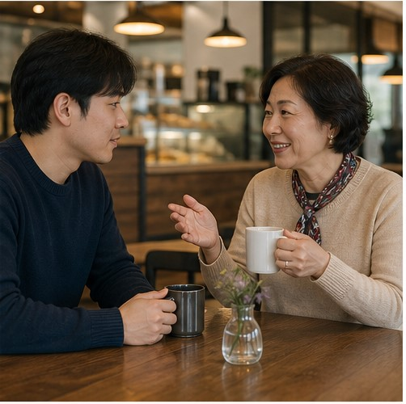

내가 충분히 말하는가
그룹 수업에서는 기다리는 시간이 길어질 수 있습니다. 1:1 수업은 현재 수준에 맞춰 질문의 난이도와 말하기 속도를 조절하고, 내가 직접 문장을 만드는 시간을 확보합니다.
성인 영어회화는 많이 듣는 것만으로 끝나지 않습니다. 내가 실제로 사용하는 업무·여행·일상 상황을 직접 말하고, 틀린 표현을 바로 교정받으며, 다음 수업 전까지 다시 써보는 과정이 필요합니다.
수업 시간에는 원어민과 말하고,
수업 밖에서는 담당 선생님과 이어갑니다.
수업 횟수만 비교하기보다 실제로 내가 말하는 시간, 목표에 맞는 피드백, 학습이 이어지는 구조가 있는지 살펴보세요.
그룹 수업에서는 기다리는 시간이 길어질 수 있습니다. 1:1 수업은 현재 수준에 맞춰 질문의 난이도와 말하기 속도를 조절하고, 내가 직접 문장을 만드는 시간을 확보합니다.
일상 스몰토크, 해외생활, 회의와 발표는 필요한 표현이 다릅니다. 단순한 프리토킹보다 실제 사용 장면에 맞춰 어휘·문장·전달 방식을 교정해야 합니다.
수업에서 배운 표현을 다시 사용하지 않으면 금방 잊기 쉽습니다. 짧은 복습과 말하기 과제가 다음 수업으로 이어져야 꾸준한 실력 변화를 만들 수 있습니다.
수업 장면부터 진단 결과, 매일의 복습까지 한눈에 확인하며 지금 필요한 학습에 집중합니다.
정해진 교재를 따라가는 것보다 현재 생활과 목표에 영어를 연결하고 싶은 분을 위한 과정입니다.
화상 회의, 발표, 해외 파트너 응대처럼 실제 업무 장면을 중심으로 전달력을 훈련합니다.
공항과 숙소, 현지 스몰토크와 문제 해결까지 자주 마주치는 상황을 역할극으로 연습합니다.

짧은 반응과 기본 문장부터 시작해 직접 말하는 경험을 차근차근 쌓습니다.
현재 말하기 수준과 어려움을 확인합니다.
목표와 일정에 맞는 과정과 수업 흐름을 정합니다.
실제 대화를 중심으로 말하고 바로 교정받습니다.
복습과 과제로 다음 수업까지 학습을 이어갑니다.
가능합니다. 왕초보는 짧은 질문과 반응, 자주 쓰는 기본 문장부터 시작합니다. 레벨테스트 결과에 따라 선생님이 말하는 속도와 표현 난이도를 조절합니다.
목표 없이 대화만 이어가는 방식이 아니라 레벨과 사용 목적에 맞는 교재·상황·표현을 활용합니다. 필요한 경우 역할극과 반복 연습을 함께 진행합니다.
상담에서 가능한 시간과 학습 빈도를 확인한 뒤 일정을 안내합니다. 중요한 것은 무리한 횟수보다 실제로 지속할 수 있는 학습 구조를 만드는 것입니다.
담당 선생님이 수업 내용을 확인하고 부족한 영역에 맞춘 복습, 말하기 과제, 쉐도잉 미션 등을 안내합니다.
실력 변화나 새로운 목표가 생기면 상담을 통해 학습 방향과 과정 조정을 안내받을 수 있습니다.